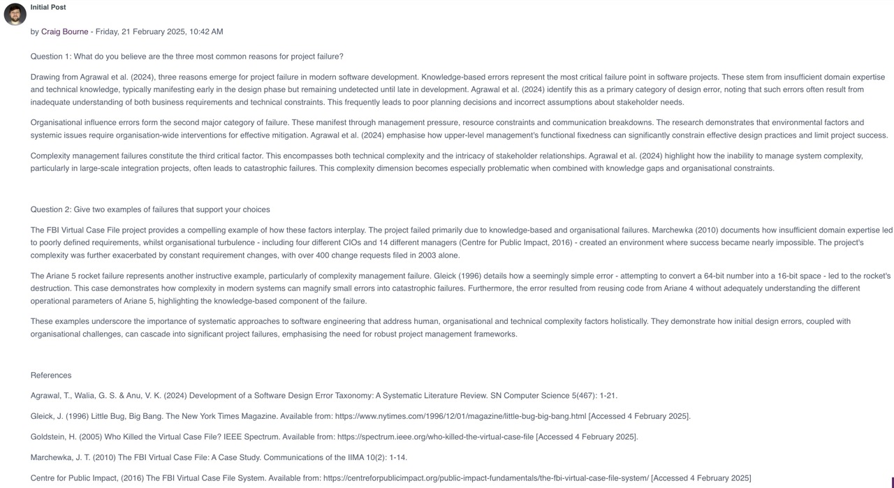

Unit 1: Introduction to Software Engineering Project Management
Module overview
This module covers the role of the Software Engineering Project Manager. This unit looks at the disciplines that a Software Engineering Project Manager needs to be familiar with. Including traditional project management skills such as resource management, planning and estimating, as well as more technical skills such as requirement management and engineering, agile management and design collaboration.
Required Reading
- Durham, D. and Michel, C. (2021) Lean Software Systems Engineering for Developers: Managing Requirements, Complexity, Teams, and Change Like a Champ. Berkeley, CA: Apress. Chapter 10.
- Agrawal, T. et al. (2024) 'Development of a Software Design Error Taxonomy: A Systematic Literature Review', SN computer Science, 5(5), pp. 467.
- Taye, G. D. and Feleke, Y. A. (2022) 'Prediction of Failures in the Project Management Knowledge Areas Using a Machine Learning Approach for Software Companies', SN Applied Sciences, 4(), pp. 1–13.
- Ishak, Md S. and AlSalem, Y. Z. (2023) 'Introduction for Factors of Success and Failure by Using IoT in Project Management', International Journal of Advanced and Applied Sciences, 10(3), pp. 56–59.
Unit Work
Team project - Synputer Project
Teams for the group project were assigned and I was paired with Georgia, Shraddha and Tinashe. Our initial task was to arrange our first meeting and agree a team contract to decide our roles and responsibilities within the team. Meeting notes can be viewed here.
We were also asked to familiarise ourselves with the core materials for the group project, which included a case study and two appendices.
Discussion post
We were also asked to make our first contributions to a collaborative discussion that would last the duration of units 1, 2 and 3. The task was to read Agrawal et al. (2024) from the required reading and answer the following questions:
- 1. What do you believe are the three most common reasons for project failure?
- 2. Give two examples of failures that support your choices.
Below is a screenshot of my post in the forum and the full post can be read here.
